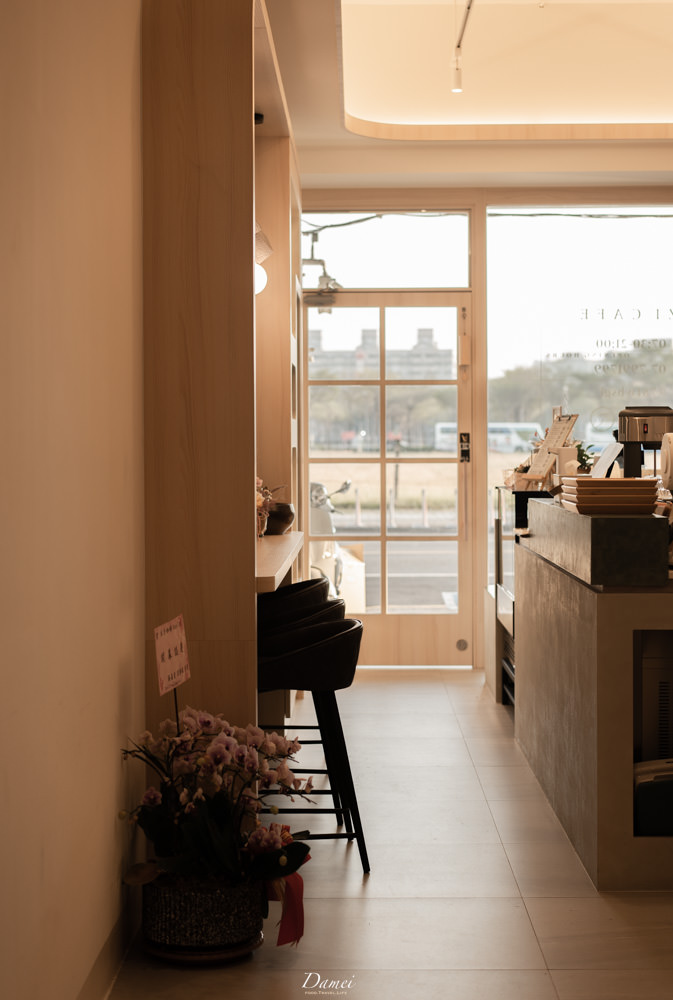
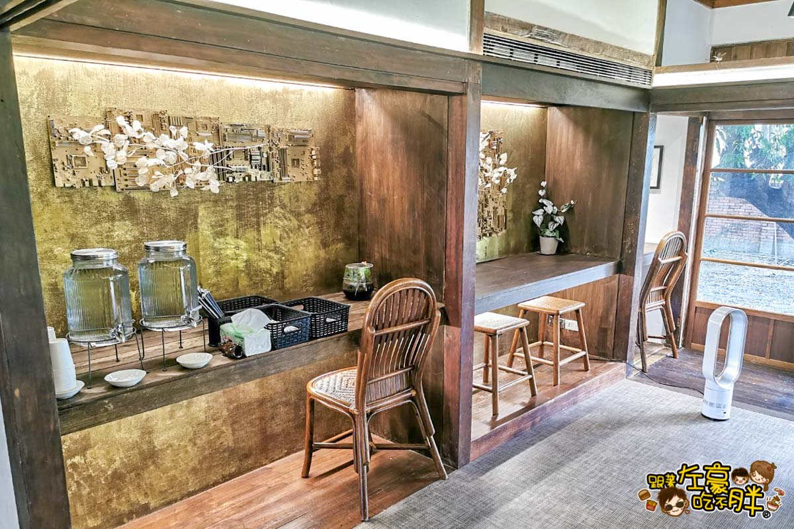
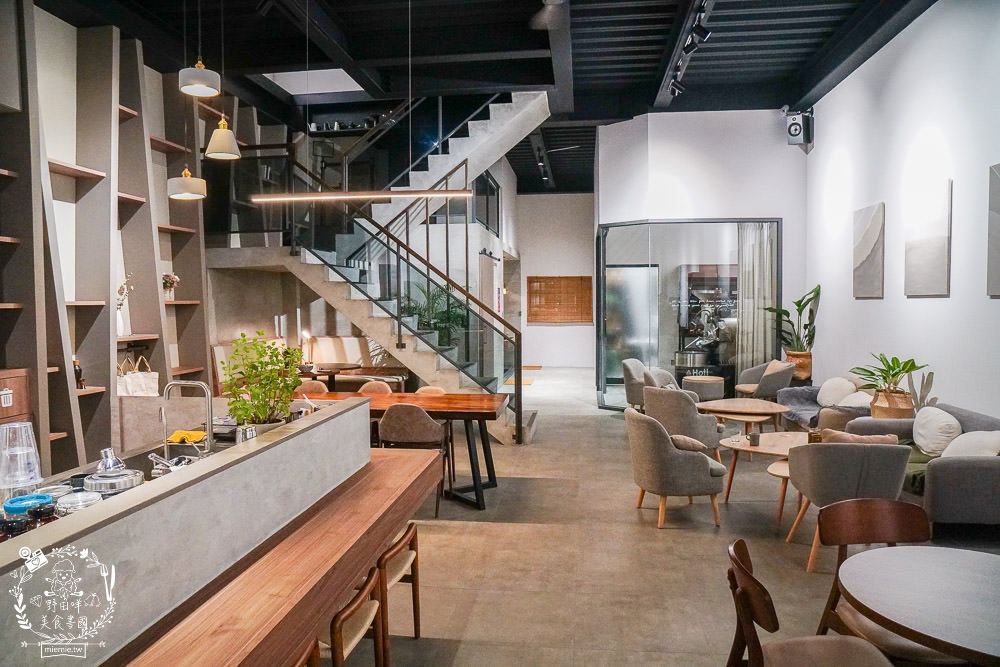

木子咖啡
偌大的鳳山自由路上一間質感自家烘焙咖啡館-木子咖啡，在此對外營業了！一走進店裡，馬上就被正在烘豆的烘豆機香氣給吸引，從義式咖啡再到手沖咖啡，選擇非常多樣，但我還是選擇最習慣的冰美式搭配一塊千層蛋糕，圓滿我的午茶時間。即使店面設計的很網美感，但咖啡甜點毫不遜色，這點很是驚喜呢。

DONKEY LAB 驢子實驗室
進駐在鳳山黃埔新村的驢子實驗室，依舊不變的是那美味的鹹派，先前我還沒去過元啡驢派，果真如大家所說的那樣，一下就被擄獲胃口。過去作為日式宿舍，現在充滿咖啡與烘焙香的地方，在暖陽灑落之際，那瞬間我感覺自己特別幸福。

MY DAILY BEVERAGE.CO
從餐車到開設店面的 My Daily Beverage.co 很喜歡他們對於空間上的巧思與設計，將香氛帶進咖啡館。想吃一份早午餐還是甜點呢？在這裡能一次吃飽，這一兩年很熱門的可朗芙再搭配一球香草冰淇淋，簡直是夏日必備的療癒甜品，除了咖啡，牛奶類的飲品也是它們的招牌！舒服的空間在這耗上午後時間吧。